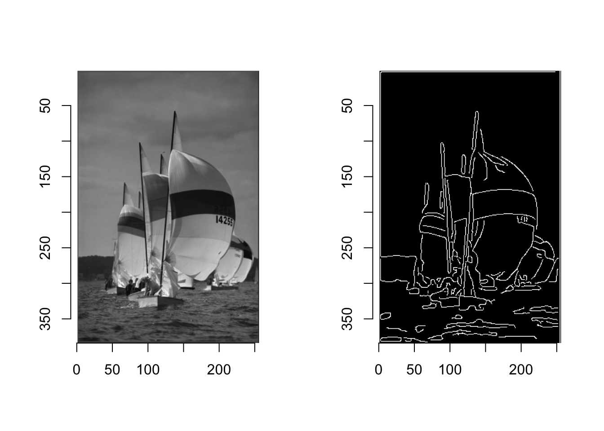
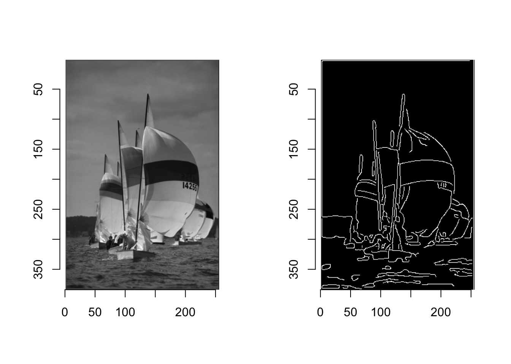
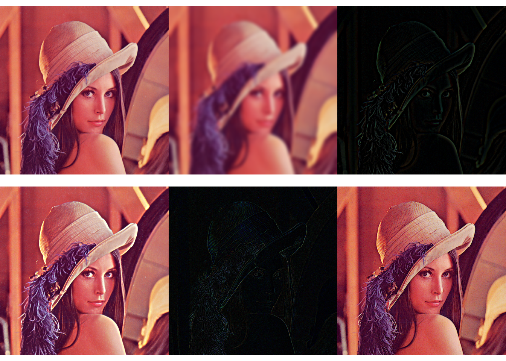

Kod
library(imager)
layout(t(1:2))
boats |>
grayscale() |>
plot()
boats |>
grayscale() |>
cannyEdges(alpha = 0.5) |>
plot()
Wyróżniające się “wtrącenia” obrazu, pochodzące z lokalnych zmian intensywności lub koloru, takie jak krawędzie i kontury, mają duże znaczenie dla wizualnej percepcji i interpretacji obrazów. Postrzegana ilość informacji w obrazie wydaje się być bezpośrednio związana z wyrazistością zawartych w nim struktur i nieciągłości. W rzeczywistości, struktury i kontury przypominające krawędzie wydają się być tak ważne dla naszego ludzkiego systemu wizualnego, że kilka linii na karykaturze lub ilustracji często wystarcza, aby jednoznacznie opisać obiekt lub scenę. Nie jest więc zaskoczeniem, że wzmacnianie i wykrywanie krawędzi jest tradycyjnym i ważnym tematem również w przetwarzaniu obrazów. W tym rozdziale najpierw przyjrzymy się prostym metodom lokalizacji krawędzi, a następnie zajmiemy się powiązanym z nimi zagadnieniem wyostrzania obrazu.
Krawędzie i kontury odgrywają dominującą rolę w ludzkim widzeniu i prawdopodobnie także w wielu innych biologicznych systemach widzenia. Krawędzie nie tylko rzucają się w oczy, ale często można opisać lub zrekonstruować całą figurę na podstawie kilku kluczowych linii, jak pokazuje przykład na Rysunek 7.1. Jak jednak powstają krawędzie i jak można je technicznie zlokalizować w obrazie?
library(imager)
layout(t(1:2))
boats |>
grayscale() |>
plot()
boats |>
grayscale() |>
cannyEdges(alpha = 0.5) |>
plot()
Krawędzie można z grubsza opisać jako miejsca na obrazie, w których natężenie światła zmienia się wyraźnie wzdłuż określonej orientacji. Im silniejsza jest lokalna zmiana intensywności, tym większy jest dowód na istnienie krawędzi w tym miejscu. W matematyce wielkość zmiany w odniesieniu do odległości przestrzennej jest znana jako pierwsza pochodna funkcji, dlatego wychodzimy od tego pojęcia, aby stworzyć nasz pierwszy prosty detektor krawędzi.
Dla uproszczenia, najpierw zbadamy sytuację tylko w jednym wymiarze, zakładając, że obraz zawiera pojedynczy jasny obszar w centrum otoczony ciemnym tłem (Rysunek 7.2 (a)). W tym przypadku profil natężenia wzdłuż jednej linii obrazu wyglądałby jak funkcja 1D \(f(x)\), jak pokazano na Rysunek 7.2 (b). Biorąc pierwszą pochodną funkcji \(f\)
\[ f'(x)=\frac{df}{dx}(x), \tag{7.1}\]
powoduje dodatnie wahnięcie w tych miejscach, gdzie intensywność wzrasta i ujemne wahnięcie tam, gdzie wartość funkcji spada (Rysunek 7.2 (c)).

W przeciwieństwie do przypadku ciągłego, pierwsza pochodna jest nieokreślona dla funkcji dyskretnej \(f(u)\) i potrzebna jest jakaś metoda, by ją oszacować. Rysunek 7.3 pokazuje podstawową ideę, ponownie dla przypadku 1D: pierwsza pochodna funkcji ciągłej w pozycji \(x\) może być interpretowana jako nachylenie jej stycznej w tej pozycji. Jedną z prostych metod przybliżonego określenia nachylenia stycznej dla funkcji dyskretnej \(f(u)\) jest dopasowanie linii prostej przechodzącej przez wartości funkcji \(f(u-1)\) i \(f(u+1)\) w sąsiedztwie \(u\)
\[ \frac{df}{dx}(u)\approx\frac{f(u+1)-f(u-1)}{2}. \tag{7.2}\]
Oczywiście tę samą metodę można zastosować w kierunku pionowym, aby oszacować pierwszą pochodną wzdłuż osi y, czyli wzdłuż kolumn obrazu.

W przypadku funkcji wielowymiarowej obliczamy pochodne cząstkowe \(I_u = \frac{\partial I(u,v)}{\partial u}\) i \(I_v = \frac{\partial I(u,v)}{\partial v}\) funkcji obrazu 2D \(I(u, v)\) odpowiednio wzdłuż osi \(u\) i \(v\). Wektor
\[ \nabla I(u,v)= \begin{bmatrix} I_u(u,v)\\ I_v(u,v) \end{bmatrix} \tag{7.3}\]
nazywamy gradientem funkcji \(I\) w punkcie \((u, v)\). Długość gradientu
\[ \vert \nabla I\vert = \sqrt{I_u^2+I_v^2} \tag{7.4}\]
jest niezmienna ze względu na obroty obrazu, a więc niezależna od orientacji leżących u jego podstaw struktur. Własność ta jest istotna dla izotropowej1 lokalizacji krawędzi, a zatem \(\vert\nabla I\vert\) jest podstawą wielu praktycznych metod detekcji krawędzi.
1 we wszystkich kierunkach wykazują one te same właściwości fizyczne
Składowe funkcji gradientu (Równanie 7.3) są po prostu pierwszymi pochodnymi wierszy i kolumn obrazu odpowiednio wzdłuż osi poziomej i pionowej. Aproksymacja pierwszych pochodnych poziomych (Równanie 7.2) może być łatwo zrealizowana przez filtr liniowy z jądrem 1D
\[ H_u^D = [-0.5,0,0.5] \tag{7.5}\]
gdzie współczynniki -0.5 i 0.5 stosujemy do elementów obrazu \(I(u-1, v)\) i \(I(u+1, v)\) odpowiednio. Zauważmy, że sam piksel środkowy \(I(u, v)\) jest z wagą zerową, a więc jest ignorowany. Analogicznie, pionowa składowa gradientu jest uzyskiwana za pomocą filtru liniowego
\[ H^D_v= \begin{bmatrix} -0.5\\ 0\\ 0.5 \end{bmatrix} \tag{7.6}\]
Rysunek 6.4 przedstawia wynik zastosowania filtrów gradientowych zdefiniowanych w Równanie 7.5 i Równanie 7.6 do syntetycznego obrazu testowego. Widać wyraźnie zależność odpowiedzi filtrów od orientacji. Filtr gradientu poziomego \(H_u^D\) reaguje najsilniej na szybkie zmiany wzdłuż kierunku poziomego, (czyli na krawędzie pionowe); analogicznie filtr gradientu pionowego \(H_v^D\) reaguje najsilniej na krawędzie poziome. W płaskich obszarach obrazu (przedstawionych jako szare na Rysunek 7.4 (b, c)) reakcja filtra jest zerowa.

Lokalne gradienty funkcji obrazu są podstawą wielu klasycznych operatorów detekcji krawędzi. Praktycznie różnią się one jedynie rodzajem filtra stosowanego do estymacji składowych gradientu oraz sposobem łączenia tych składowych. W wielu sytuacjach człowiek jest zainteresowany nie tylko natężeniem punktów krawędziowych, ale także lokalnym kierunkiem krawędzi. Oba rodzaje informacji zawarte są w funkcji gradientu i mogą być łatwo obliczone ze składowych kierunkowych. Poniższy niewielki zbiór opisuje kilka często używanych, prostych operatorów krawędziowych, które istnieją od wielu lat, a więc są interesujące również z historycznego punktu widzenia.
Operatory krawędziowe autorstwa Prewitta („Picture Processing and Psychopictorics - 1st Edition”, b.d.) i Sobela (Davis 1975) to dwie klasyczne metody, które różnią się tylko nieznacznie stosowanymi przez nie filtrami pochodnymi.
Oba operatory wykorzystują filtry liniowe, które rozciągają się odpowiednio na trzy sąsiednie wiersze i kolumny, aby przeciwdziałać wrażliwości na szumy prostych (pojedynczy wiersz/kolumna) operatorów gradientowych. Operator Prewitta wykorzystuje jądra postaci
\[ H^P_u= \begin{bmatrix} -1& 0& 1\\ -1& 0& 1\\ -1& 0& 1 \end{bmatrix} \quad\text{i}\quad H^P_v=\begin{bmatrix} -1&-1&-1\\ 0&0&0\\ 1&1&1 \end{bmatrix} \tag{7.7}\]
które obliczają średnie gradientu odpowiednio w trzech sąsiednich wierszach lub kolumnach. Podczas gdy filtry Sobela definiuje się w postaci
\[ H^S_u= \begin{bmatrix} -1&0&1\\ -2&0&2\\ -1&0&1 \end{bmatrix} \quad \text{i}\quad H^S_v=\begin{bmatrix} -1&-2&-1\\ 0&0&0\\ 1&2&1 \end{bmatrix} \tag{7.8}\]
czyli jak widać są podobne do filtrów Prewitta z tą różnicą, że część wygładzająca przypisuje większą wagę do aktualnej linii środkowej i kolumny odpowiednio. W przypadku obu filtrów długość wektora gradientu krawędzi jest określona przez
\[ E(u,v)=\sqrt{I_u^2(u,v)+I_v^2(u,v)}, \tag{7.9}\]
gdzie \(I_u\) i \(I_v\) powstały przez mnożenie \(I*H\) (\(H\) jest filtrem Prewitta lub Sobela). Natomiast lokalny kąt orientacji krawędzi jest równy
\[ \Phi(u,v)=\tan^{-1}\left(\frac{I_u(u,v)}{I_v(u,v)}\right) \tag{7.10}\]

Cały proces ekstrakcji wielkości i orientacji krawędzi jest podsumowany na Rysunek 7.6. Najpierw oryginalny obraz \(I\) jest niezależnie splatany z dwoma filtrami gradientowymi \(H_u\) i \(H_v\), a następnie z filtrów obliczana jest długość wektora gradientu krawędzi \(E\) i orientacja \(\Phi\).

Jako jeden z najprostszych i najstarszych detektorów krawędzi, operator Robertsa („Optical and Electro-Optical Information Processing”, b.d.) ma dziś głównie znaczenie historyczne. Wykorzystuje on dwa niezwykle małe filtry o rozmiarach 2 × 2 do estymacji gradientu kierunkowego wzdłuż przekątnych obrazu. Zdefiniowane są one za pomocą jądra
\[ H^R_1= \begin{bmatrix} 0&1\\ -1&0 \end{bmatrix}\quad\text{i}\quad H^R_2= \begin{bmatrix} -1&0\\ 0&1 \end{bmatrix} \tag{7.11}\]
Projektowanie liniowych filtrów krawędziowych wiąże się z pewnym kompromisem: im silniej filtr reaguje na struktury podobne do krawędzi, tym bardziej wrażliwy jest na orientację. Innymi słowy, filtry niewrażliwe na orientację mają tendencję do reagowania na struktury nie będące krawędziami, podczas gdy najbardziej dyskryminujące filtry krawędziowe reagują tylko na krawędzie w wąskim zakresie orientacji. Jednym z rozwiązań jest zastosowanie nie tylko pojedynczej pary stosunkowo “szerokich” filtrów dla dwóch kierunków (takich jak Prewitta i Sobela), ale większego zestawu filtrów o ciasno rozłożonych orientacjach.
Tym razem zastosujemy 8 filtrów zmieniając orientację o \(45\degree\).

Innym klasycznym operatorem kompasu jest operator zaproponowany przez Kirscha (Kirsch 1971), który również wykorzystuje osiem zorientowanych filtrów o następujących kernelach

Jednym z problemów z operatorami do wykrywania krawędzi opartymi na pierwszych pochodnych jest to, że każda wynikowa krawędź jest tak szeroka jak przedział zmiany intensywności, a zatem krawędzie mogą być trudne do precyzyjnego zlokalizowania. Alternatywna klasa operatorów krawędzi wykorzystuje drugie pochodne funkcji obrazu.

Druga pochodna funkcji mierzy jej lokalną krzywiznę. Idea jest taka, że krawędzie można znaleźć w miejscach zerowych lub - jeszcze lepiej - w miejscach zerowych drugich pochodnych funkcji obrazu, jak pokazano na Rysunek 7.7 dla przypadku 1D. Ponieważ drugie pochodne mają tendencję do wzmacniania szumu obrazu, zwykle stosuje się pewien rodzaj wygładzania wstępnego za pomocą odpowiednich filtrów dolnoprzepustowych.
Popularnym przykładem jest operator “Laplacian-of-Gaussian” (LoG) (Marr i Hildreth 1980), który łączy wygładzanie gussowskie i obliczanie drugich pochodnych w jeden filtr liniowy. Przykład na Rysunek 7.8 pokazuje, że krawędzie uzyskane za pomocą operatora LoG są dokładniej zlokalizowane niż te dostarczone przez operatory Prewitta i Sobela.
Niestety, wyniki działania prostych operatorów krawędziowych, o których mówiliśmy do tej pory, często odbiegają od tego, co my jako ludzie postrzegamy jako ważne krawędzie. Dwie główne przyczyny tego stanu rzeczy to:
Typowe małe operatory krawędzi, takie jak operator Sobela, mogą reagować tylko na różnice intensywności, które występują w obrębie ich regionów filtrów 3x3 piksele. Aby rozpoznać wtrącenia podobne do krawędzi w większym zakresie, potrzebowalibyśmy albo większych operatorów krawędzi (z odpowiednio dużymi filtrami), albo użyć oryginalnych (małych) operatorów na zredukowanych (tj. przeskalowanych) obrazach. Jest to główna idea technik “multiresolution” (zwanych również “hierarchicznymi” lub “piramidowymi”), które tradycyjnie są wykorzystywane w wielu zastosowaniach przetwarzania obrazów. W kontekście wykrywania krawędzi, sprowadza się to zazwyczaj do wykrywania najpierw krawędzi na różnych poziomach skali, a następnie decydowania, która krawędź (jeśli w ogóle) na danym poziomie skali jest dominująca w każdej pozycji obrazu.
W wielu sytuacjach, kolejnym krokiem po wzmocnieniu krawędzi (przez jakiś operator krawędziowy) jest wybór punktów krawędziowych, czyli binarna decyzja o tym, czy piksel obrazu jest punktem krawędziowym czy nie. Najprostszą metodą jest zastosowanie operacji progowania do długości wektora gradientu krawędzi dostarczonej przez operator krawędzi, przy użyciu stałej lub adaptacyjnej wartości progowej, co daje binarny obraz krawędzi lub “mapę krawędzi”.
W praktyce mapy krawędzi rzadko zawierają idealne kontury, ale zamiast tego wiele małych, niepołączonych fragmentów konturów, przerwanych w miejscach o niewystarczającej sile krawędzi2. Po progowaniu puste miejsca nie zawierają oczywiście żadnej informacji o krawędziach, która mogłaby zostać wykorzystana w kolejnym kroku, np. do łączenia sąsiadujących segmentów krawędzi. Pomimo tej słabości, globalne progowanie jest często stosowane w tym momencie ze względu na swoją prostotę.
2 wyrażonej długością wektora gradientu krawędzi
Idea sekwencyjnego śledzenia konturów wzdłuż odkrytych punktów krawędziowych nie jest rzadkością i wydaje się dość prosta w założeniu. Rozpoczynając od punktu obrazu o dużej sile krawędzi, podąża się iteracyjnie w obu kierunkach, aż do momentu, gdy oba ślady spotkają się i powstanie zamknięty kontur. Niestety, istnieje kilka przeszkód, które sprawiają, że zadanie to jest trudniejsze niż się początkowo wydaje, m.in:
Ze względu na te problemy, śledzenie konturów zazwyczaj nie jest stosowane do obrazów oryginalnych lub obrazów o ciągłej wartości krawędzi, z wyjątkiem bardzo prostych sytuacji, takich jak wyraźne oddzielenie obiektów (pierwszego planu) od tła. Śledzenie konturów w segmentowanych obrazach binarnych jest oczywiście znacznie prostsze.
Operator zaproponowany przez Canny’ego jest szeroko stosowany i nadal uważany za “state of the art”3 w detekcji krawędzi. Metoda ta stara się osiągnąć trzy główne cele:
3 najwyższe osiągnięcie w danej dziedzinie
Właściwości te nie są zwykle osiągane przez proste operatory krawędziowe (najczęściej oparte na pierwszych pochodnych i późniejszym progowaniu). W swej istocie filtr Canny’ego jest metodą gradientową (opartą na pierwszych pochodnych), ale do precyzyjnej lokalizacji krawędzi wykorzystuje miejsca zerowe drugich pochodnych. Pod tym względem metoda ta jest podobna do detektorów krawędzi, które bazują na drugich pochodnych funkcji obrazu (Canny 1986).

W pełni zaimplementowany detektor Canny’ego wykorzystuje zestaw stosunkowo dużych, zorientowanych filtrów przy wielu rozdzielczościach obrazu i łączy poszczególne wyniki we wspólną mapę krawędzi. Często jednak stosuje się tylko jednoskalową implementację algorytmu z regulowanym promieniem filtra (parametr wygładzania \(\sigma\)), która jednak przewyższa większość prostych operatorów krawędziowych. Ponadto algorytm ten daje nie tylko binarną mapę krawędzi, ale także połączone łańcuchy pikseli krawędziowych, co znacznie upraszcza kolejne etapy przetwarzania. Dlatego nawet w swojej podstawowej (jednoskalowej) postaci operator Canny’ego jest często preferowany w stosunku do innych metod detekcji krawędzi. W swojej podstawowej (jednoskalowej) postaci operator Canny’ego wykonuje następujące kroki:

Wyostrzanie obrazów (ang. sharpening) jest częstym zadaniem, np. w celu poprawy ostrości po zeskanowaniu lub przeskalowaniu obrazu lub w celu wstępnej kompensacji późniejszej utraty ostrości w trakcie drukowania lub wyświetlania obrazu. Powszechnym podejściem do wyostrzania obrazu jest wzmacnianie wysokoczęstotliwościowych (ang. hight-frequency amplifying) składowych obrazu, które są głównie odpowiedzialne za postrzeganą ostrość obrazu i dla których najsilniejsze występują przy szybkich zmianach intensywności. W dalszej części opisujemy dwie metody sztucznego wyostrzania obrazu, które opierają się na technikach podobnych do detekcji krawędzi.

Popularną metodą lokalizacji szybkich zmian intensywności są filtry oparte na drugich pochodnych funkcji obrazu. Rysunek 7.10 ilustruje tę ideę dla obrazu 1D i ciągłej funkcji \(f(x)\). Druga pochodna \(f''(x)\) funkcji schodkowej pokazuje dodatni impuls na dolnym końcu przejścia i ujemny impuls na górnym końcu. Krawędź wyostrza się przez odjęcie pewnego ułamka w drugiej pochodnej \(f''(x)\) od oryginalnej funkcji \(f(x)\)
\[ \hat{f}(x)=f(x)-w\cdot f''(x). \tag{7.12}\]
W zależności od współczynnika wagowego \(w\geq0\), wyrażenie w Równanie 7.12 powoduje, że funkcja intensywności przeskakuje po obu stronach krawędzi, co powoduje wyolbrzymienie krawędzi i zwiększenie postrzeganej ostrości.
Wyostrzenie funkcji 2D można uzyskać za pomocą drugich pochodnych w kierunku poziomym i pionowym połączonych tzw. operatorem Laplace’a. Operator Laplace’a \(\nabla^2\) funkcji 2D \(f(x, y)\) jest zdefiniowany jako suma drugich pochodnych cząstkowych wzdłuż kierunków \(x\) i \(y\):
\[ (\nabla^2f)(x,y)=\frac{\partial^2 f}{\partial^2 x}(x,y)+\frac{\partial^2 f}{\partial^2 y}(x,y). \tag{7.13}\]
Podobnie jak w przypadku pierwszych pochodnych, również drugie pochodne funkcji obrazu dyskretnego mogą być estymowane za pomocą zestawu prostych filtrów liniowych. Również w tym przypadku zaproponowano kilka wersji. Na przykład, dwa filtry 1D:
\[ \frac{\partial^2 f}{\partial^2 x}\approx H_x^L= \begin{bmatrix} 1 &-2 &1 \end{bmatrix}\quad\text{i}\quad \frac{\partial^2 f}{\partial^2 y}\approx H_y^L= \begin{bmatrix} 1\\ -2\\ 1 \end{bmatrix}. \tag{7.14}\]
do szacowania drugich pochodnych odpowiednio wzdłuż kierunku \(x\) i \(y\), łączą się w filtr Laplace’a 2D:
\[ H^L= \begin{bmatrix} 0&1&0\\ 1&-4&1\\ 0&1&0 \end{bmatrix}. \tag{7.15}\]
Wyostrzanie odbywa się poprzez odjęcie przekształconego obrazu przez filtr Laplace’a od oryginalnego z odpowiednią wagą \(w\)
\[ I'\leftarrow I-w\cdot (H^L*I). \tag{7.16}\]
Rysunek 7.11 przedstawia przykład zastosowania filtru Laplace’a \(H^L\) do obrazu w skali szarości, gdzie wyraźnie widoczne są pary dodatnio i ujemnych szczytów po obu stronach każdej krawędzi. Filtr wydaje się niemal izotropowy pomimo grubego przybliżenia za pomocą małych filtrów.

Metoda nieostrej maski (ang. unsharp masking) (USM) to technika wyostrzania krawędzi, która jest szczególnie popularna w astronomii, druku cyfrowym i wielu innych dziedzinach przetwarzania obrazów. Termin ten wywodzi się z klasycznej fotografii, gdzie ostrość obrazu była optycznie zwiększana poprzez połączenie go z wygładzoną (“nieostrą”) kopią. Proces ten jest w zasadzie taki sam dla obrazów cyfrowych.
Pierwszym krokiem w filtrze USM jest odjęcie od oryginału wygładzonej wersji obrazu, która uwydatnia krawędzie. Wynik ten nazywany jest “maską”. W fotografii analogowej wymagane wygładzenie uzyskiwano przez zwykłe rozogniskowanie obiektywu4. Następnie maska jest ponownie dodawana do oryginału, w taki sposób, że krawędzie w obrazie są wyostrzone. Podsumowując, kroki zaangażowane w filtrowanie USM to:
4 utratę ostrości
\[ M\leftarrow I-(I*\tilde{H})=I-\tilde{I}. \tag{7.17}\]
Przyjmuje się, że jądro \(\tilde{H}\) filtra wygładzającego jest znormalizowane. 2. Aby uzyskać wyostrzony obraz \(\check{I}\), maska \(M\) jest dodawana do oryginalnego obrazu \(I\) z odpowiednią wagą \(a\), za pomocą której kontrolujemy stopień wyostrzenia
\[ \check{I}\leftarrow I+a\cdot M, \tag{7.18}\] zatem podstawiając Równanie 7.17 otrzymujemy
\[ \check{I}\leftarrow I+a\cdot (I-\tilde{I})=(1+a)\cdot I-a\cdot \tilde{I}. \] Jako filtr wygładzający \(\tilde{H}\) można właściwie zastosować dowolny filtr wygładzający, choć najczęściej spotyka się w tym miejscu filtry gassowskie \(H^{G,\sigma}\) o \(\sigma \in [1,20]\). Natomiast najczęściej przyjmowane wartości dla \(a\) mieszczą się w przedziale [0.2,4].
lena <- Rvision::image("images/lena.png")
layout(matrix(1:6, 2, 3, byrow = TRUE))
plot(lena)
lena_blr <- Rvision::gaussianBlur(lena, 10, 10, 5, 5)
plot(lena_blr)
maska <- lena-lena_blr
plot(maska)
lena_sharp <- lena+maska
plot(lena_sharp)
lena_flt <- Rvision::filter2D(lena, matrix(c(0,1,0,
1,-4,1,
0,1,0), byrow = T, ncol = 3))
plot(lena_flt)
(lena-lena_flt) |> plot()